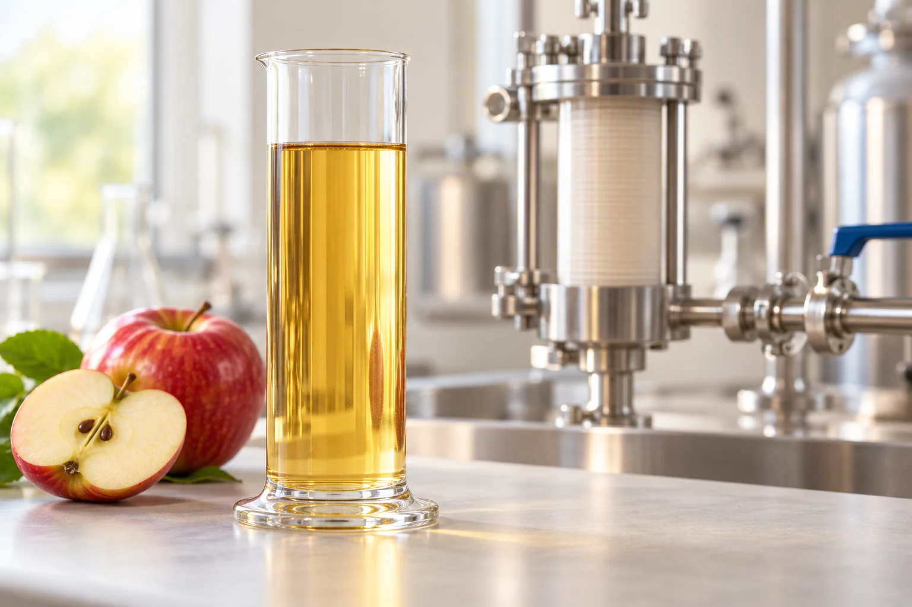

Enzymes for juice processing
Fruit carries value into a processing line. How its structure changes affects the route from mash to the intended juice. SUNSON approaches this through enzyme action and the distinct questions at each stage.
Explore the applicationsBefore pressing: work with the fruit material
Fruit-mash treatment takes place before pressing or extraction. At this stage, pectin-related changes are considered in relation to the fruit material and the recovery of juice.
The fruit, mash preparation and separation stage shape the application question. Juice recovery should be evaluated as its own result, rather than inferred from a clearer appearance.
| Treatment position | Main question | Application route |
|---|---|---|
| Fruit mash before pressing | How treatment relates to collected juice and recovery | Juice yield and extraction |
| Extracted juice before separation | How pectin treatment relates to clarity and separation | Juice clarification and filtration |

After extraction: work toward the intended juice
Treatment of extracted juice concerns pectin remaining in the liquid and its relationship with clarification and separation. This is a different application position from fruit-mash treatment before pressing.
The desired juice style matters. Pectinase should not be treated as a universal answer to every source of haze, and clarity should not be confused with juice recovery.
Bring the processing question into the research
SUNSON’s strain and application research connect with enzyme manufacturing. In juice processing, that work becomes relevant through a precise question about the fruit material, stage and intended result.
SAD-016 provides a product route for pectin-related treatment. Technical information and trial feedback help connect the preparation with the actual process; the enzyme-value topic explains the pectin mechanism behind the application.
Discuss your juice process
Describe the fruit raw material, where treatment would take place and whether your priority is pressing, clarification or filtration.
Related information
Explore the science behind the application: how enzymes work. Learn more about SUNSON research and manufacturing, or find technical information.
Current implementation notes
Confirmed inputs in use: company identity and contacts, supplied product materials and the agreed application scope.
Implementation: production domain, enquiry delivery and actual data-processing configuration remain part of the launch work. Forms in this preview do not submit.
Media: concept scenes and packaging positions are layout aids; company media replaces them at the final asset stage.